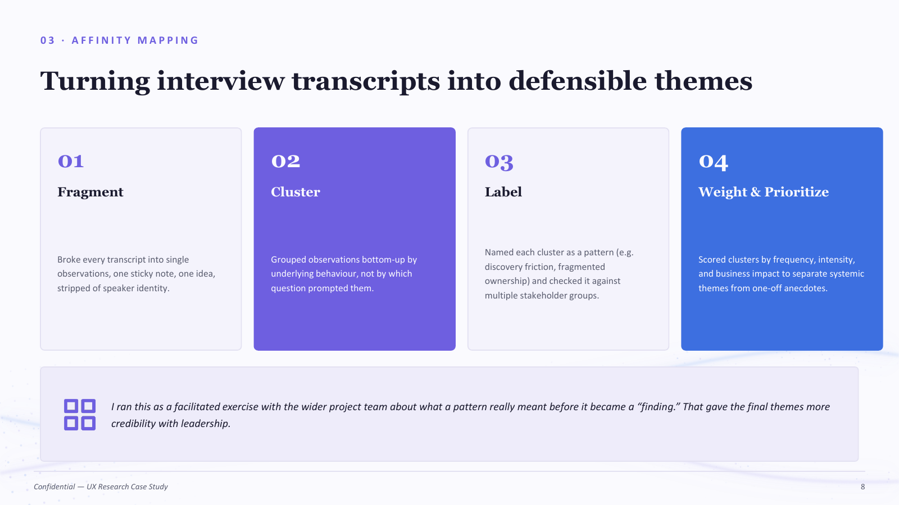
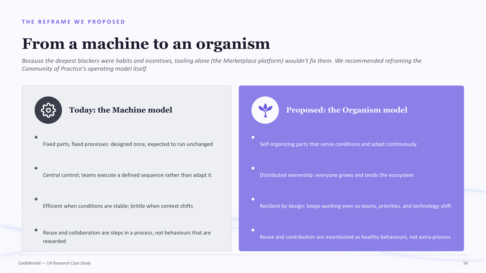

Interviews led
Independently led nine stakeholder interviews as part of a seven-person design team’s research effort.
I researched why teams struggled to find and reuse existing APIs, then synthesised the findings into practical recommendations for improving discovery and trust.
Within a large African banking environment, I helped investigate why teams rebuilt capabilities instead of reusing APIs already available. I designed the interview protocol, independently led 9 of 16 stakeholder interviews, contributed to synthesis and helped translate the findings into six cross-cutting themes and recommendations.
Scope and evidence: Qualitative discovery under NDA; findings informed recommendations, not a measured production outcome.
The API Marketplace existed, but people still relied on personal networks to find capabilities. Unclear ownership, uncertainty about support and delivery pressure made reuse feel risky or slower than rebuilding.
Independently led nine stakeholder interviews as part of a seven-person design team’s research effort.
Helped organise observations and patterns through affinity mapping and synthesis.
Connected day-to-day workarounds with wider organisational incentives and ownership.
Client and sensitive organisational details are anonymised under NDA.
I designed a stakeholder interview protocol that moved from context to recent examples, delivery friction, culture and future needs. Scenario prompts encouraged participants to describe what they actually did, rather than rely on abstract opinions. I then helped facilitate affinity mapping and ideation.

Better search could help people find APIs, but would not resolve uncertainty about ownership, support or suitability.
Show clear owner/contact details and enough context for consumers to judge whether an API fits their needs.
Metadata helps only if it stays accurate. The minimum useful information and its ownership process would need to be agreed with API teams.

The work produced a qualitative evidence base, six themes and a strategic direction for leadership. It highlighted how discoverability, trust, ownership and incentives interact. The recommendations remained recommendations; their effect on API reuse was not measured.
In enterprise UX research, a visible usability issue can be the surface of a broader organisational problem. Interviewing about real examples and connecting individual workarounds to shared incentives helped avoid designing a search-only fix.